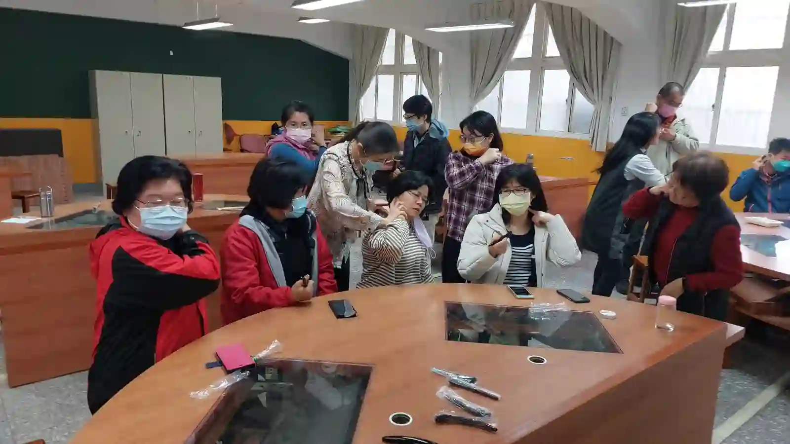

The Bojin Journal · The method
Sore Hands or a Weak Grip? How to Hold the Tool Differently

A student in her seventies emailed me last spring, a little embarrassed. She loved the routine, but her hands had started aching in the mornings, and gripping the stick for even three minutes left her thumb sore. She wanted to know if she should just give it up.
She shouldn't have, and she didn't. What she needed wasn't more determination. It was a different way to hold the tool.
Why the grip is the part that fails first
Most people assume the limit will be their face: too sensitive, too tired, not enough time. For women whose hands have started changing, the limit shows up somewhere else entirely. Arthritis, a stiff thumb joint, an old injury, or simply less grip strength than you had a decade ago, and suddenly the smallest tool in your routine becomes the hardest part of it.
There's a reason it lands on the thumb. The instinct with a small tool is to pinch it, holding it between thumb and forefinger the way you'd hold a pen. That pinch asks the exact joint that hurts most to do all the work, and it asks it to hold steady for minutes at a time.
How to change the hold, not the method
Here is the part I want you to hear clearly: the method is order, angle, position, and comfortable pressure. None of those four things require a strong grip. If your hand can rest the tool against your skin and move it slowly, you can do bojin. Everything else is negotiable.
A stainless steel bojin stick actually helps here, because the handle is shaped to sit in a whole hand rather than be pinched in two fingers. The weight of the tool itself does more of the work than people realize, so you can hold it loosely and let it rest into the skin instead of gripping and pressing. If your hands are painful and you own a gua sha stone, a flat stone held in an open palm is often even easier than any handled tool.
The method is order, angle, position, and comfortable pressure. None of those four things require a strong grip. Everything about how you hold the tool is negotiable.

And if some days your hands say no to holding anything at all, your fingers work. Two fingertips moving slowly along the same path, in the same order, with the same comfortable pressure, is still the method. It reaches less deeply than the tool, and it still counts.
The 5 steps, adapted for sore hands

Warm your hands before your face.
Run them under warm water for thirty seconds, or hold a warm mug. Stiff hands grip harder, and warm ones need less effort.
Hold the stick in your whole hand, not pinched.
Let the handle rest across your palm with your fingers curled around it, thumb resting alongside rather than squeezing.
Let the tool's weight do the pressing.
Rest it against the skin and move it. You're guiding, not forcing, and the right pressure is still the one that reaches without hurting.
Work in shorter stretches.
Sixty seconds, put the tool down, shake your hand out, pick it up again. Three short stretches beat one long one your hands will pay for.
Switch hands, or switch to fingers.
Use whichever hand is having a better day, and use fingertips on the days neither is. Finish down the neck as always.
Honest expectations, and a safety note
None of this treats arthritis or changes what's happening in your joints. It's a way to keep a routine you enjoy without making your hands worse, which is a smaller and more honest goal. The face results are the same gentle, temporary ones as always; the adaptation is just about the hands that get you there.
The best hold is the one you can still do next month. If a loose grip and sixty-second stretches keep you going when a firm grip would have stopped you by June, the loose grip is the better technique, not the lesser one.
Quick answers
Can I still do bojin if I have arthritis in my hands?
Often yes, with a looser whole-hand hold, shorter stretches, and fingertips on bad days. Ask your doctor or hand therapist first if you have a diagnosed condition.
What's the best way to hold the stick if my thumb hurts?
Rest the handle across your palm with fingers curled around it and the thumb alongside, rather than pinching it like a pen. Let the tool's weight do the pressing.
Is using just my fingers as good as using the tool?
It reaches less deeply, but the method is order, angle, position, and comfortable pressure, and fingers can follow all four. It still counts.
Does bojin help arthritis in my hands?
No. This is about adapting the grip so your routine doesn't make your hands sore. It isn't a treatment for arthritis or any joint condition.
Want to see the loose-hand hold in action?
My free 3-minute video shows the grip on a real hand, so you can copy exactly how loose is loose enough.
Watch the free 3-min videoYu-Ting Lan is a Taiwan-based international bojin instructor and the founder of Héhé Studio. She has taught her bojin method to more than a thousand students, from complete beginners to grandmothers, across Taiwan, Hong Kong, and Malaysia.